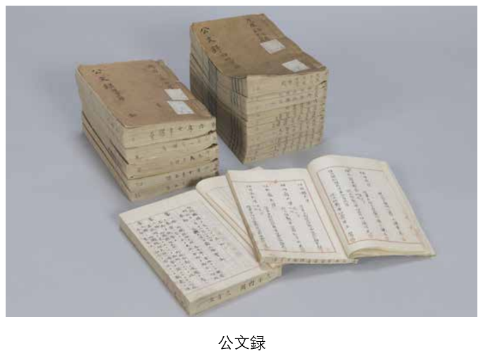
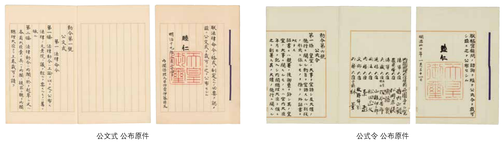
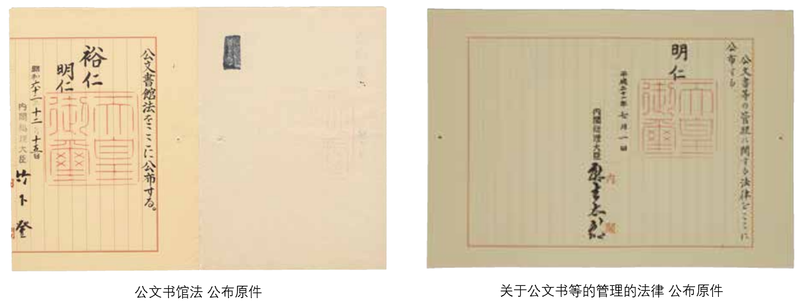

日本档案事业发展史
本页面介绍日本的档案事业发展历史。内容有日本明治时期到二战前、二战到现代的文书管理制度的发展历程。关于对一些在阅读过程中可能成为障碍的词语，在词语解释部分进行了解释。
日本近代的档案事业(明治时期到第二次世界大战之前)
明治时期的开始和文书管理：
在明治维新打到了封建社会后，日本进入了近代化的路程。新政府开始着手于文书的保管和整理。在1873年(明治6年)政府规定了太政官的文书管理条例“记录科室章程”(日语：記録課章程)、“记录科室处务顺序”(日语：記録課処務順序)，由此开始了“公文録”、“太政类典”等文书的编纂管理工作。
- “记录科室章程”和“编纂处务顺序”(日语：編纂処務順序)的制定：
- 这两种条例规定了太政官正院记录处的体制和业务职责，根据这两条规定开始编纂了“公文録”、“太政类典”。“公文録”是按年月和机构进行编纂太政官从政府各机构和各府县接收的公文书的书籍，总共有4000多本。编纂这本书籍的目的在于保管公文书，于是在编纂保管对象的公文书原件的同时，还制作了供日常使用的复制件。“公文録”收集了1868年(明治元年)到1885年之间的公文书。“太政类典”是编纂整理先例、法令等的书籍。
- 皇宫的火灾和文书的复原：
- 1873年5月5日，皇宫出了火灾，太政官行政楼房和大半的收藏记录由此烧毁，之后政府开始统计损失，并开展了文书的修复计划。因此在“公文録”中收录的1873年以前的公文书均为抄本。

内阁制度的开始和文书管理：
经过1877年的官制改革，在1885年12月，内阁制度被建立起来。内阁里设置了记录局，次年颁布了规定各机构管辖的事务及其组织结构的“各省官制通则”，以及规定了诏敕、法律形式的“公文式”等规定，逐渐组织起政府的文书管理、法律公布等的相关制度，之后在1907年颁布了“公式令”。
在明治前半期，明治政府曾调查过西方国家的法规和行政组织结构，其中也有调查到档案管理制度。在明治中期由黑板胜美、三浦周行等历史学家提及到欧美的档案制度。虽然有这样积极学习海外档案制度的试图，但最终并没有很好的衔接到内阁各机构和记录局的政策上。
- 记录局的成立：
- 1885年伴随着内阁的成立，在太政官负责文书管理的文书局被废除，设置了记录局。记录局中有记录科室和图书科室，记录科室负责记录和汇编内阁秘书和内阁各部门的文书，图书科室负责图书分类、保存、借出和回收。
- 记录改良顺序的梗概(日语：記録改良順序の梗概)的制定：
- 1885年12月首相向各机构的大臣发布业务整理的纲领，要求行政文书书面内容的简洁化。这是为了解决内阁成立之前，太政官与各个行政机关之间的文书的往来频繁的弊端。在翌年1月，内阁记录局以简化文书整理、编纂体制为目的，制定了“记录改良顺序的梗概”，定下了记录局业务改革的方针。其中要求废除“公文録”、“布令便览”的编纂，从1月4日以后开始对“公文类聚”、“公文杂录”、“日记簿”进行编纂。
- 公文式的颁布：
- 1886年2月，颁布了规定法律或其它文书的颁布形式和方法的“公文式”。
- 公式令的颁布：
- 在1907年2月颁布了“公式令”。“公式令”是改良“公文式”的内容，规定了公布法律和敕令以及其它诏敕等文书时的程序和格式的标准。
由内阁记录局成立，1886年的“公文式”、1907年的 “公式令”的颁布，确立了日本文书管理和法律公布的制度。随后，这些制度经过多次修改被运用下去。

日本现代的档案事业(第二次世界大战到现在)
1941年日本向美国和英国宣战，参战到第二次世界大战。开战当初日本占了优势，但从1943年开始战况逐渐恶化，1944年开始日本本受轰炸攻击。这些战祸对文书的保管带来了影响，为了防止文书的破坏，对这些采取了避难措施。战后随着《日本国宪法》的实施，公式令被废除，政府组织发生了变化，同时围绕文书管理的环境也有了巨大变化。
经过战争和1950年代中期发生的日本市町村合并，丧失了多个文书。在1959年日本学术会议向首相提出了关于防止公文书散佚的建议。进入1970年代，人们开始呼吁对市政历史学项目中收集到的档案进行永久保存，从此开始档案馆逐渐建立起来。在1971年7月，作为总理府的附属机关设立了日本国立公文书馆。1987年制定了公文书馆法(日语：公文書館法)，1999年制定了国立公文书馆法(日语：国立公文書館法)，在2009年关于公文书等的管理的法律(日语：公文書等の管理に関する法律の公布)被制定。

词语解释：
- 太政官：是日本律令制度下执掌国家司法、行政、立法大权的最高国家机构。
- 公文类聚：是在1882年“太政类典”改称后的书籍。
- 市町村合并：日本基于强化市町村的效率与能量、扩大其治理规模，并因应财政困难，120年来持续推动市町村合并。